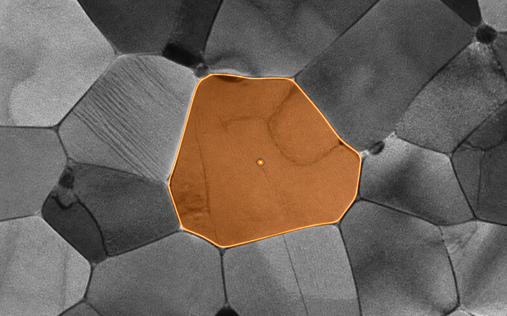
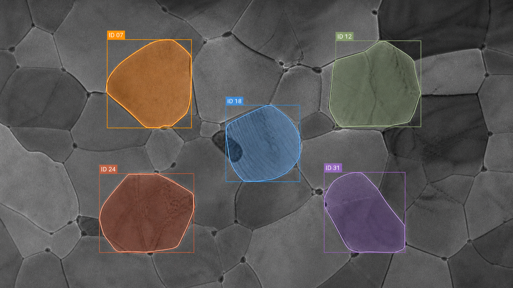

01 Segment

02 Track

Materials Data Science and Informatics (IAS-9) · Forschungszentrum Jülich
Automated segmentation and tracking of grain growth in TEM data
Segmentation is the starting point; grain tracking is the central challenge. I am building a pipeline that preserves each grain’s identity across long in-situ TEM sequences so researchers can measure area, morphology, boundary motion, and grain growth over time.
01 · Single frameGrain segmentation
Adapt and compare modern segmentation methods for difficult microscopy contrast.
02 · Time seriesVideo object tracking
Maintain grain identity through boundary motion, growth, shrinkage, and changing neighbours.
Computer-vision methods
- In-situ TEM
- Instance segmentation
- Video object tracking
- SAM · SAM2 · SAM3
- MatSAM
- U-Net
- YOLO — planned
- PyTorch
- OpenCV
- Grain growth
Additional data exposure: EBSD orientation maps · exploratory TEM registration